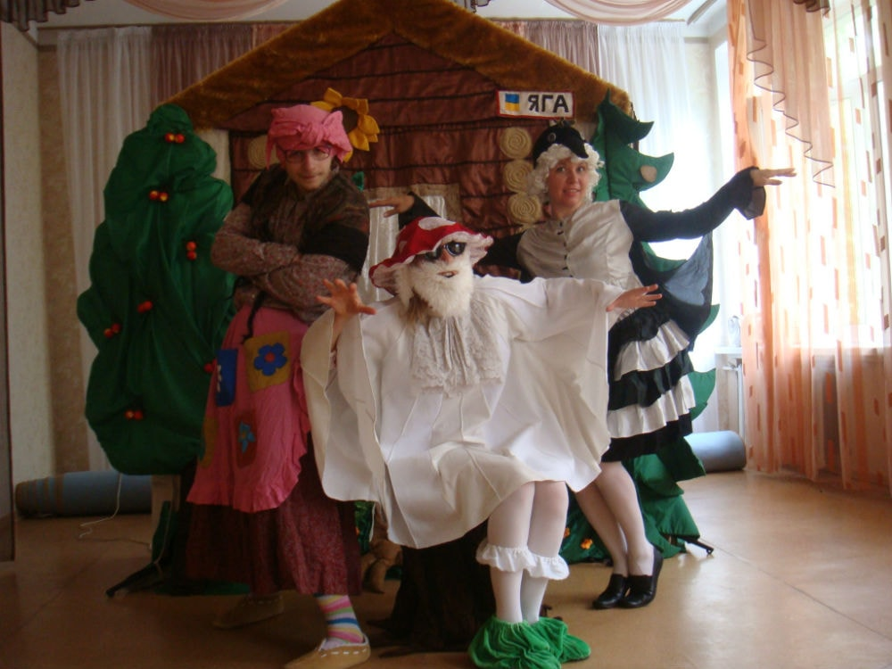
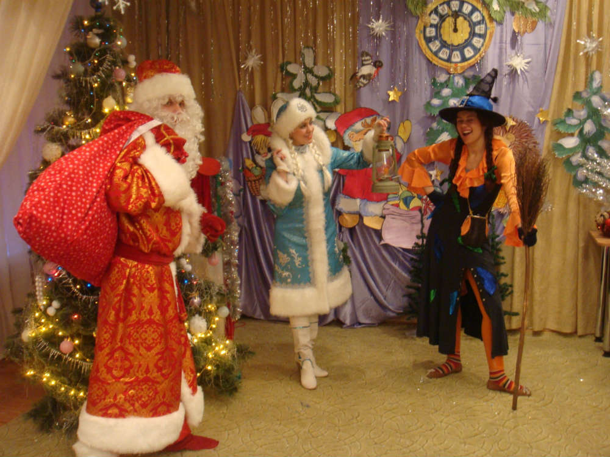
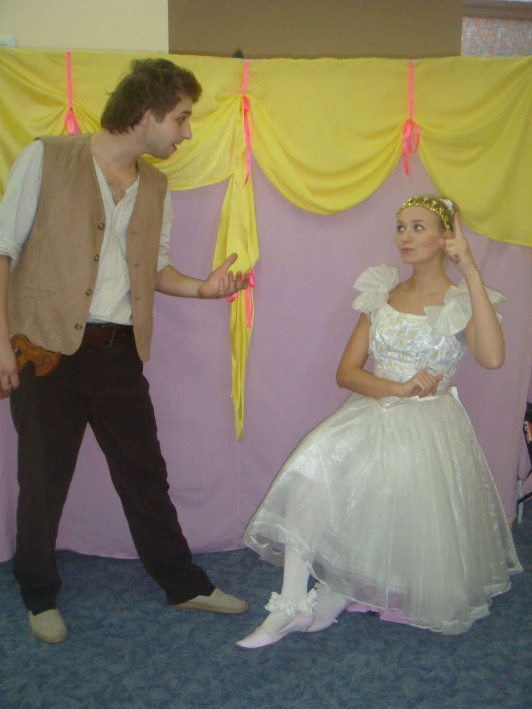

Зачароване озеро

Постанова на одну дію для дітей віком від 4 до 10 років, мова українська або російська, тривалість 40-45 хвилин, режисер постановки – Бачинська Н. М.
Дана постановка в доступній формі розкриває питання захисту навколишнього середовища, дружби та взаємовиручки.
Пастка для неслухняних
Авторська постановка на одну дію для дітей віком від 3.5 до 10 років, мова українська або російська, тривалість 40-45 хвилин, режисер постановки – Бачинська Н. М.
В постановці розкривається тема повсякденної поведінки дитини, в доступній формі дітям пояснюється необхідність слухати старших.
Золота дитина
Постановка по мотивах п’єси В. Орлова «Золоте курча» на одну дію. Для дітей віком від 3.5 до 10 років, мова українська або російська, тривалість 40-45 хвилин, режисер постановки – Бачинська Н.М.
Одна із самих популярних та актуальних п’єс дитячих театрів, що розкриває відносини між дітьми та дорослими.
Новорічні пригоди

Авторська тематична постановка на одну дію для дітей віком від 3.5 до 12 років, мова українська або російська, тривалість 40-50 хвилин, режисер постановки – Бачинська Н.М.
Весела зустріч Нового року з конкурсами, жартами та подарунками.
Принцеса та лісоруб

Весела постановка на одну дію по мотивам народної казки, для різних вікових груп, мова українська або російська, тривалість 40-50 хвилин, режисер постановки - Бачинська Н.М.
Чарівні слова

Авторська тематична постановка на одну дію для дітей віком від 3.5 до 12 років, мова українська або російська, тривалість 40 хвилин. Режисер - Бачинська Н.М.
Дітям у доступній формі пояснюється що таке ввічливість.
Скарбниця знань
Авторська тематична постановка на одну дію для дітей віком від 3.5 до 12 років, мова українська або російська, тривалість 45 хвилин.
Скарби які завжди з вами.
Улянка

Авторська постановка на одну дiю по мотивах народних казок, для дiтей вiком до 12 рокiв, мова українська або росiйська, тривалiсть 45 хвилин.
Казковi пригоди, як в навчанні підмога.
Мішкіни пригоди
Весела авторська постановка, на одну дію для дітей віком від 4 до 12 років, мова українська або російська, тривалість 40хв. Режисер - Бачинська Н.М.
Казкові пригоди Міхаїла , та його ведмедиків.
Як у Ляни на галявині

Повчально-ігрова постановка для дітей віком до 13 років.
Завдяки своїй універсальності може використовуватися як повчальний спектакль-гра з будь-якою тематикою, цікавою як малятам так і дітям більш старшого віку.
Корисні поради
Авторська постановка на одну дію для дітей віком від 4 до 11 років, мова українська або російська, тривалість 40 хв., реж. Бачинська Н.М.
В ході постановки розкриваються питання повсякденної життєдіяльності.
Справжня казка

Постанова на одну дію для дітей віком від 3.5 до 10 років, мова українська або російська, тривалість 40-45хв.
Постановка в доступній формі розкриває питання обережного відношення до особистих речей .
Навчання Коськи
Авторська постановка на одну дію для дітей віком від 4 до 12 років, мова українська або російська, тривалість 40-45 хвилин, режисер постановки – Бачинська Н.М.
В ході постановки розкриваються такі питання повсякденної життєдіяльності як правила дорожнього руху та пожежна безпека.
Пригоди привида Еспера
Постанова на одну дію для дітей віком від 3.5 років, мова українська або російська, тривалість 40-45 хв.
В постанові розкриваються питання дружби та взаємовиручки, може включати в себе різну тематику.
Іванко
постанова на одну дію для дітей віком від 3.5 років, мова українська, тривалість 40-45 хв. За мотивами одноіменної казки.
Примхлива принцеса
постанова на одну дію для дітей віком від 4-х років, мова українська або російська, тривалість 40-45 хв., реж. Бачинська Н.М., за мотивами однойменної чеської казки.
Перезагрузка

Постановка на два акти по мотивам однойменного твору Д. Лойджа. Тривалість 60-80 хв., вік від 14 років, режисер постановки – Бачинська Н.М.
В ході постановки розкриваються питання, що стосуються теми комп’ютерної залежності серед молоді, в простій, доступній формі показані способи протидії негативним наслідкам цього роду залежності.
Капіталіст

Соціально-сатирична комедія на два акти по мотивам твору І. Карпенко-Карого “Хазяїн”. Тривалість 60-80 хв., вік від 14 років, режисер постановки – Бачинська Н.М.
Скупість доведена до абсурду, відсутність культури і нікчемне честолюбство – все це робить будь-яку людину огидною і смішною.
Справжні мрійники
Постановка на два акти по мотивам однойменного твору Н. М. Бачинської. Тривалість 60-80 хв., вік від 14 років, режисер постановки – Бачинська Н. М.
Усі ми колись мріяли, мріємо і мріятимемо і як добре коли наші мрії збуваються, але ще краще коли вони збуваються саме так, як ми цього бажали.
Лабіринт долі
Постановка на одну дiю по мотивам твору С. Мальчика. Режисер постановки - С. Мальчик. Сучасна постановка про взаємовідносини дiтей i батькiв - стара тема актуальна завжди.
Це наш дім
Cоціальна постановка по мотивам однойменного твору К. Корсика . Тривалість 70хв., вік від 14 років, режисер постановки - Бачинська Н. М.
Постанова, яка розкриває проблему правопорушень серед сучасної молоді, а також показує працю правозахисників з іншого, що відрізняється від повсякденних стереотипів, боку.
Я герой...
Соціальна драма , спроба перенести переживання сучасної молоді з приводу своєї неспроможності на театральні підмостки. Однак не все так однозначно і сучасна молодь - це покоління свого часу. По мотивам твору К.Корсика "Всі мої Я"